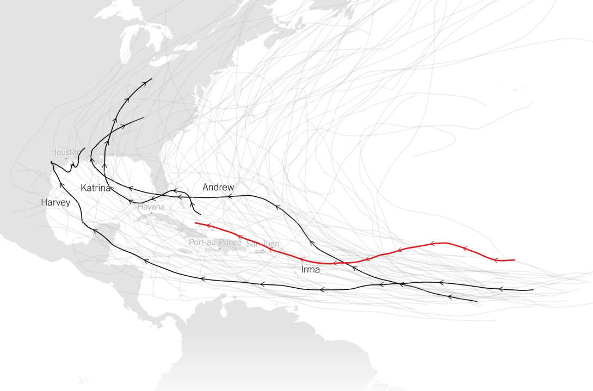

Angela is a Masters in City Planning student at MIT's Department of Urban Studies and Planning. She is passionate about urban climate change resilience. This page will be updated throughout Spring 2018 with her work on big data related to climate change and housing in Boston.
An example of an extreme weather visualization is the New York Times' article depicting the strength of Hurricane Irma in comparison to past hurricanes.
